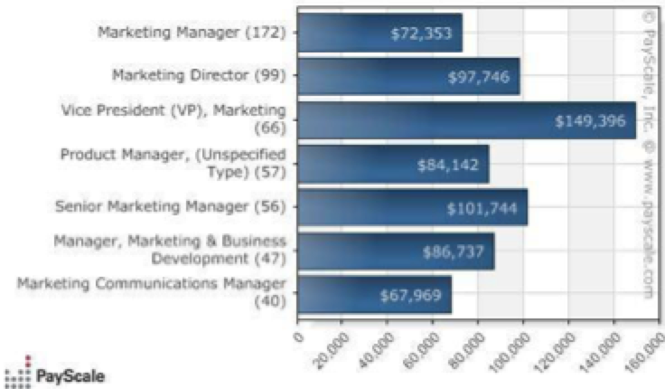

Salaries
Since the field of marketing has such a wide variety of jobs the salary also ranges. The average salary for marketing is about $60k, but a starting salary is usually around $35K.
The figure above shows different job titles a marketer can gain with a company and their average salaries. It all depends on what company one works for. Better-off well known companies will have higher paying salaries and vise-versa. Also, the amount of schooling a person has can affect how much they will earn. Once a student graduates with a bachelor’s degree and gains professional experience, they have the opportunity to come back and be a MBA student. A MBA student is a one who goes back to school to earn their master’s degree. MBA stands for Master of Business Administration. MBA students also get the chance to explore something they didn’t get the chance to while earning their bachelors degree.. Professor D. Wilson likes to call these students “career switchers” because they essentially have the opportunity to broaden what they know about business. A student could of graduated with a supply chain degree but discovered they didn’t like it or could want to add more to their resume they can study something else and gain the knowledge of that degree or specialization. Once completing the master program a MBA student’s typical salary is $90k. When working for a brand a salary comes but so do “freebies”. Usually if a marketer is working for a brand they get free products to display and show the public. For instance the brand Tory Burch is a high-end fashion line. Employees are granted a well off salary and each month a head to toe outfit. For any marketers that desire to work for a brand this is a dream come true.